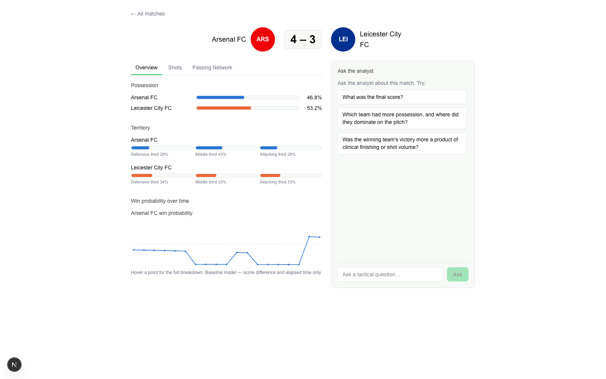
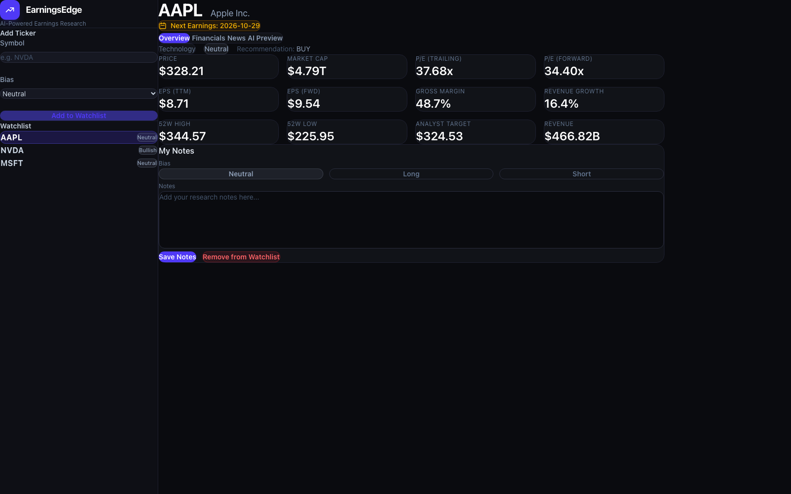
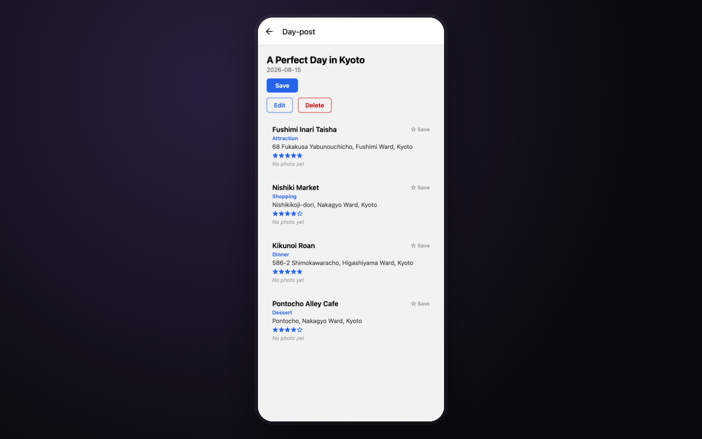
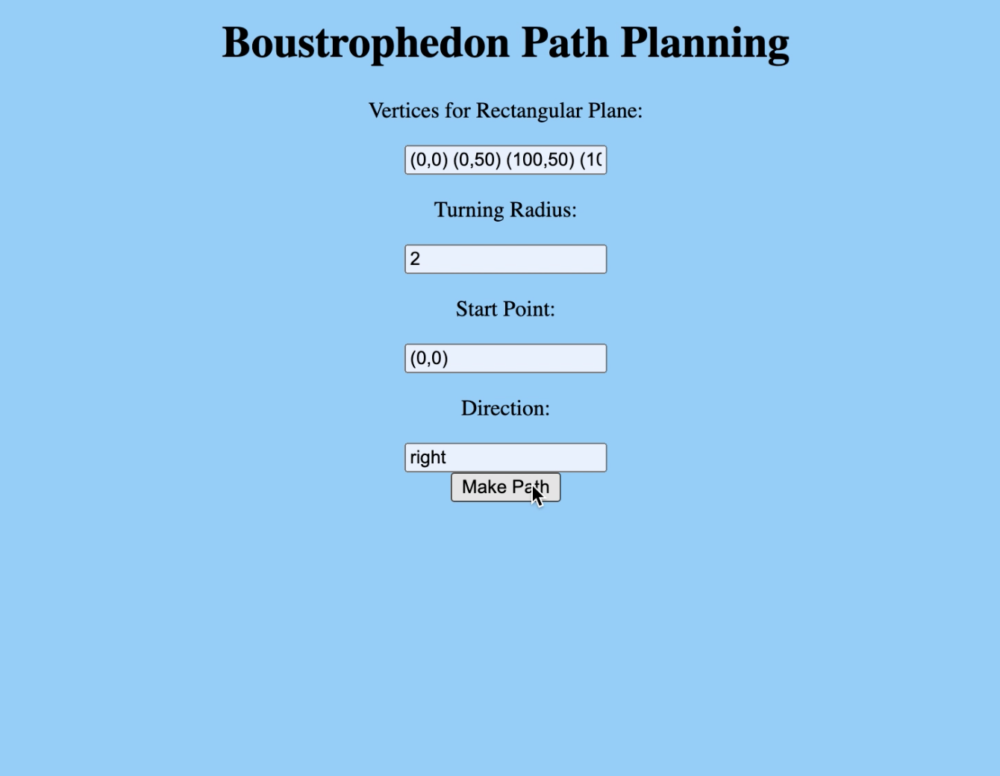
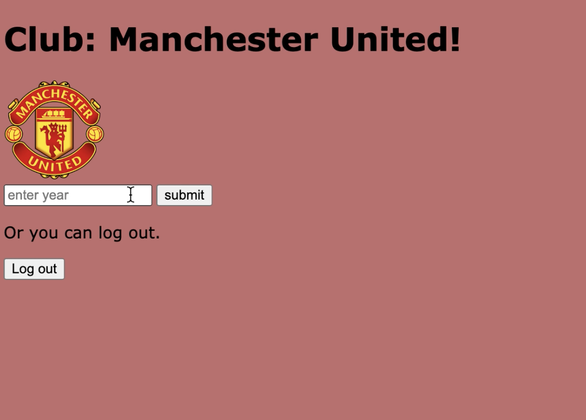
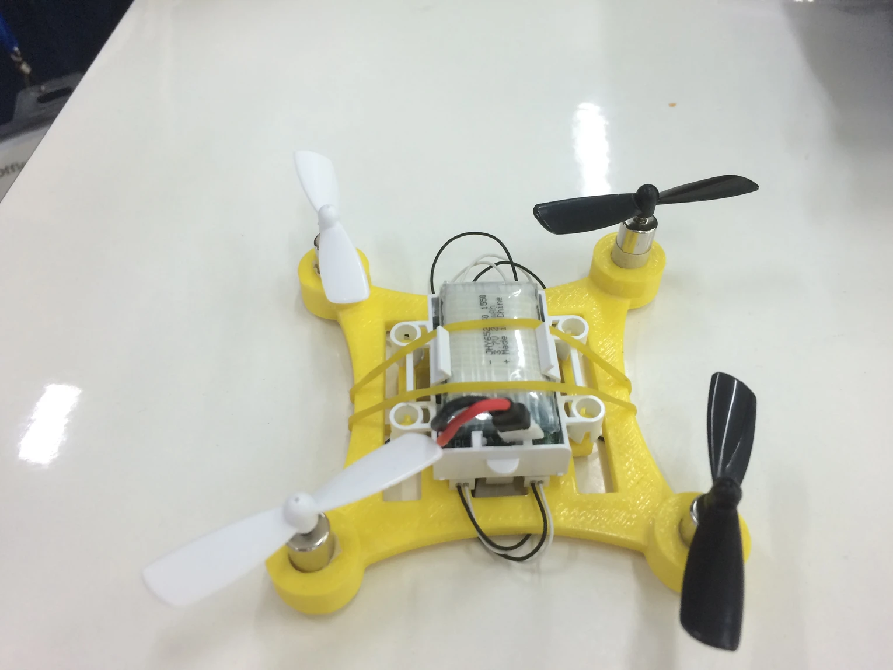
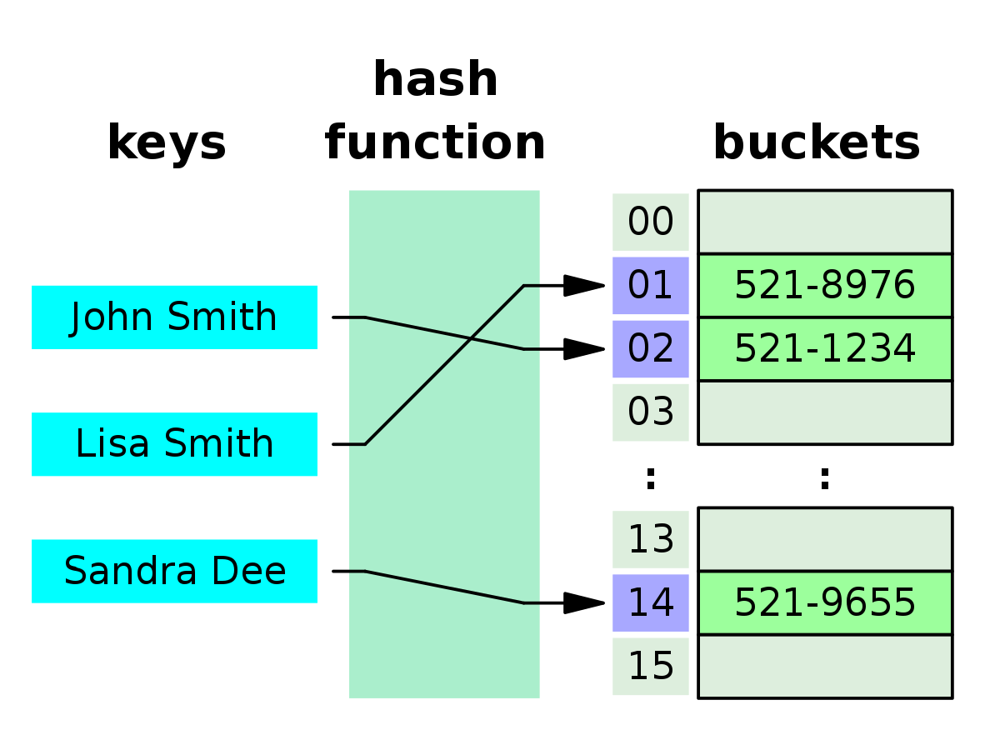
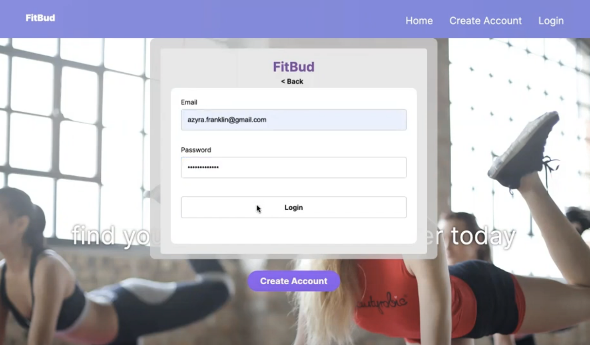

A mix of full-stack AI-agent platforms, research tooling, and earlier coursework projects I built to learn a new part of the stack.

A distributed real-time soccer intelligence platform. Match events stream through FastAPI, Redpanda/Kafka, and Redis into deterministic tactical-analysis reducers — stress-tested to ~400 events/sec with 4.37s crash recovery. Three scikit-learn models trained on 380 Premier League matches (including a 136,930-possession retrieval index) feed a seven-tool Gemini/ADK agent, surfaced through a Next.js dashboard that passed 30/30 grounding checks under adversarial prompts.

An AI-powered earnings research dashboard for equity analysts. Pulls live financial snapshots and price history per ticker, aggregates recent news, and calls an LLM on demand to generate a structured earnings preview — bull thesis, bear thesis, key metrics to watch, and suggested questions for the call — all in one watchlist-driven dashboard instead of a dozen manual lookups.

A social media / travel-diary platform (Spring Boot, PostgreSQL, React Native) with a route-optimization engine — a constrained TSP solver (greedy, 2-opt, simulated annealing) that sequences saved places into efficient itineraries. Also built a custom C++ key-value store with nonblocking TCP, incremental-rehashing hash tables, and min-heap TTL caching, cutting itinerary request latency 2.16× (28ms → 13ms).
A passive time-tracking system built around random pings — no timers to start or stop. The SwiftUI iOS app pings you every so often with a honeycomb bubble picker to log what you're doing; the Next.js web dashboard turns a week of pings into charts, activity rankings, and AI-generated insights via Claude. Built with Jesse Tzo — won Best Use of Figma Make.



A drone designed in 123Design; the frame was 3D printed, then fitted with a battery and propellers.

A C++ program simulating hashtable mechanisms, using probing to detect collisions in the birthday paradox problem.

Group project helping people find workout partners; I built the app's chatbox feature in ReactJS.
Group project analyzing Spotify music data — wrangling data and surfacing insights about music taste patterns.